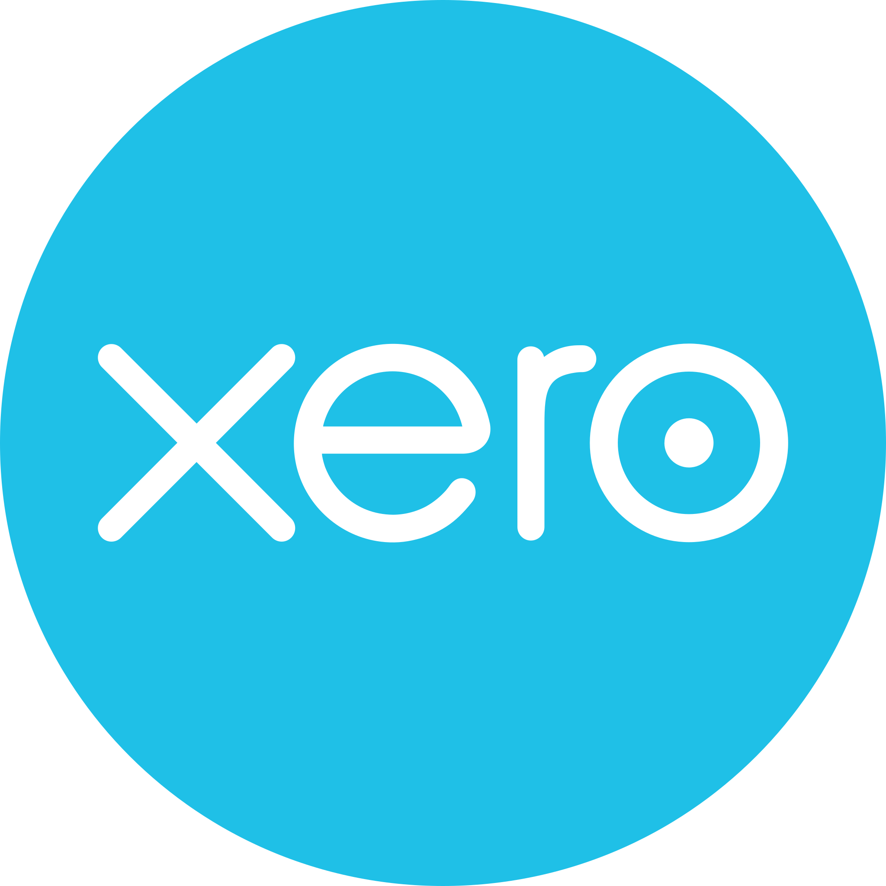
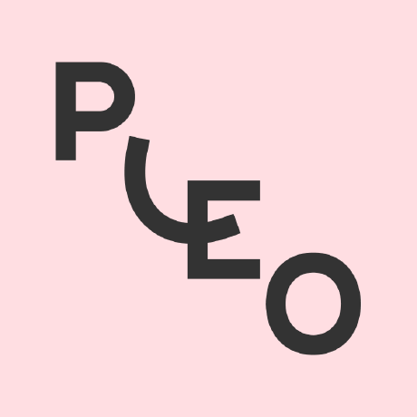
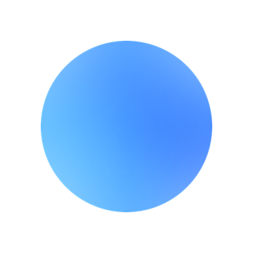

Auto Bank
Wreck.

The narrative is relentless.


Anthropic's prediction.
Business & finance: in theory, GenAI can do almost all of our job.

But I think they're wrong.
You're fine. We're in a hype bubble. And they're already backtracking.

Why listen to me?


I’m an obsessive early adopter.
If it worked, I'd be doing it.
It’s not correct every time.
It hallucinates by design, not by mistake.
Sold below
cost.
This isn't a software business. What happens when they raise prices and cut the limits?

It's a big problem.


So how should we
use (Gen)AI?
If full autonomy worked,
I'd be using it.

A copilot. Never the pilot.
✗ The pilot
Agentic AI autonomously completing end-to-end task completion.
✓ The copilot
Augments. We stay in charge.
An exception layer. It flags; you choose to act.
Breaks down steep learning curves.
AI Chat Interfaces. The daily driver.
The expert co-pilot you can use on the fly at any time.

What I use
Claude
Gemini
ChatGPT
Other options
Built with Claude Code
Sidgrove Intelligence.
The app that now sits at the centre of my practice.

Daily cashflow. Straight from the bank.

Bookkeeping workflow and comms.

Deadlines and alerts.

Management accounts. With notifications.

Payroll reviews and client sign-off.

VAT (Sales Tax) reviews and client sign-off.

Month end. Schedules to cover all postings.


Sidgrove Intelligence sits between me and my clients (in Slack).

Xero Sheets
Sheets
PleoJune pack is ready. Two things worth a look.
Built with Claude Code
Simple websites. Like my own, sidgrove.com.

Built with Claude Design
Brand assets. With Claude Design.
The Claude Code engine, tailored for design.

AI note takers.
What I use
Loom
Other options
 Fireflies
Vinyl
Granola
Fathom
Fireflies
Vinyl
Granola
Fathom
Dictation. Talk instead of type.
The quickest way to write a prompt.
“Summarise this thread into three bullets and draft a reply”
What I use

Aqua Voice
Other options
 Wispr Flow
superwhisper
Wispr Flow
superwhisper Spreadsheet add-ons. Used mindfully.

What I use
Claude for Excel
ChatGPT for Sheets
Oh, and Claude Cowork.
I barely touch it. Cowork and orchestration layers are a shortcut with shortcomings, IMO. Like junk food, or Ozempic.
The product that does whole tasks, end to end.
Probably correctly. Sometimes not.
Niche use cases (I think so anyway).
Lots of hype.
Other options

Thank
you.


Scan for the AI walkthrough recordings